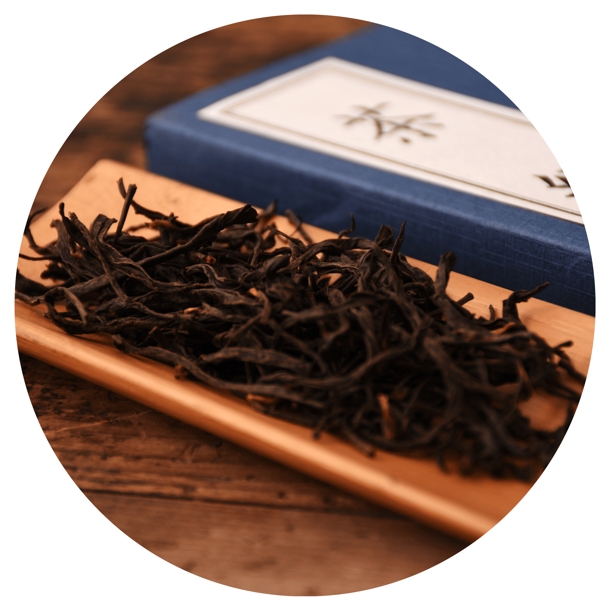

红茶

红茶以适宜制作本品的茶树新芽叶为原料，经萎凋、揉捻、发酵、干燥等典型工艺过程精制而成。 红茶在加工过程中发生了以茶多酚酶促氧化为中心的化学反应，鲜叶中的化学成分变化较大，茶多酚减少90%以上，产生了茶黄素、茶红素等新成分。香气物质比鲜叶明显增加。所以红茶具有红茶、红汤、红叶和香甜味醇的特征。我国红茶中主要有：祁门红茶、政和工夫、闽红工夫、坦洋工夫、滇红工夫、九曲红梅、宁红工夫、宜红工夫等等，以祁门红茶最为著名，为我国第二大茶类。